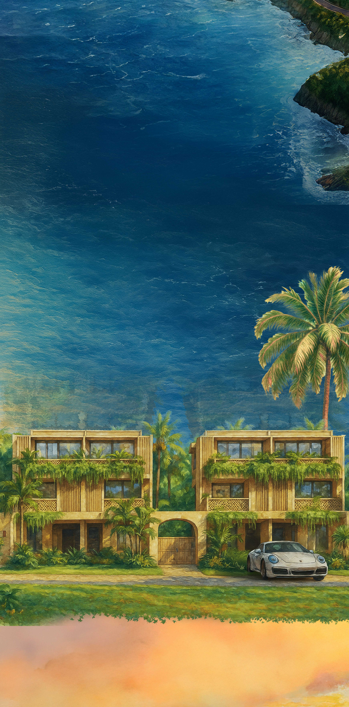
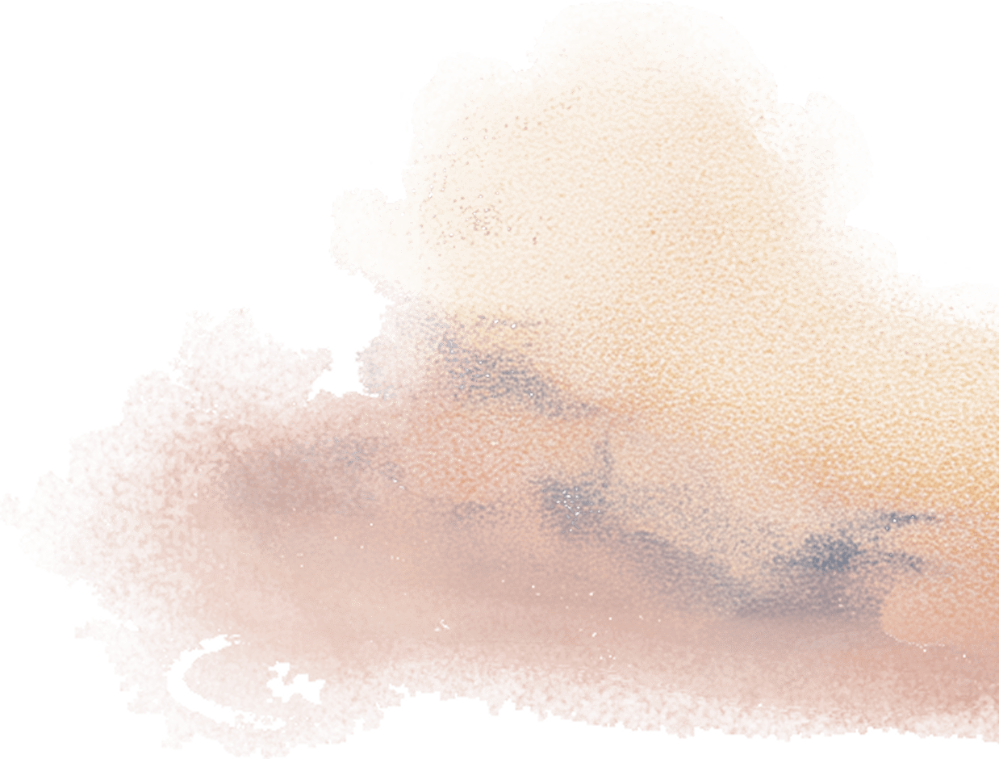
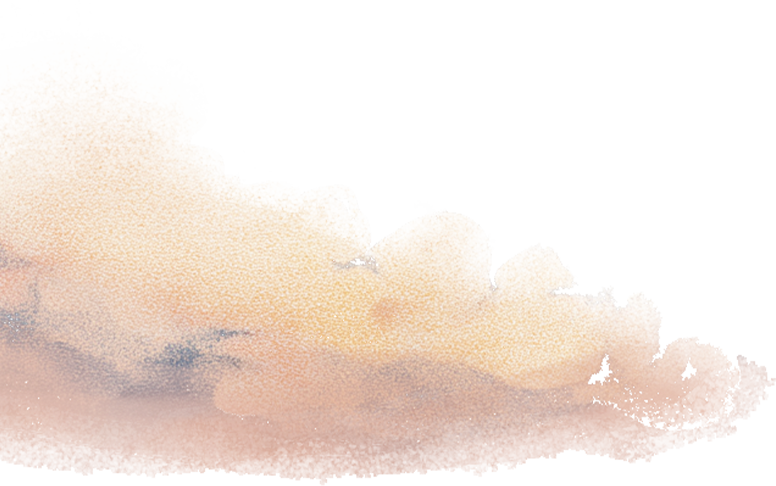

Đất tiên vịnh ngọc
Đất tiên vịnh ngọc
Bạn có từng mơ
Nơi đất Tiên giao hoà vịnh Ngọc
Những ngôi nhà thở nhịp thiên nhiên
Nghe rừng thủ thỉ
Nghe biển thầm thì
Đủ sôi động để sống đời rực rỡ
Đủ
yên bình để sống trọn riêng tư
Nơi tự do bền vững, được xây bằng những ký ức khó phai



Nép mình bên vịnh Nha Trang,

Thiết kế “Lost in Nature”, bản hòa ca giữa miền xanh và biển cả.
Đất tiên vịnh ngọc

Nép mình bên vịnh Nha Trang,
Có một miền đất “độc nhất vô nhị” lưng tựa núi Tiên, mặt nghênh vịnh
Ngọc.
Nơi có những ngôi nhà ẩn mình giữa thiên nhiên, trong lành và đầy
cảm hứng.
Ngôi nhà biết thở
Thiết kế “Lost in Nature”, bản hòa ca giữa miền xanh và biển cả.
Năm tầng cây xanh ôm trọn hiên nhà,
Gần 14.000m² mặt nước mát lành len lỏi khắp không gian,
Ba bãi tắm riêng tư như những ốc đảo giữa vịnh trời,
Nơi thiên nhiên trở thành một phần cuộc sống.



Không gian sống dành cho những tâm hồn ưa khám phá,
Quảng trường Trống Đồng và Nhà hát Đó, nơi quá khứ và hiện tại giao hoà,

Bất động sản hạng sang - bến du thuyền
Không gian sống dành cho những tâm hồn ưa khám phá,
Và tinh thần tự do trở thành bản sắc của cộng đồng La Tiên Villa.
Bất động sản nghệ thuật văn hoá
Quảng trường Trống Đồng và Nhà hát Đó, nơi quá khứ và hiện tại giao hoà,
nơi những giá trị dân tộc được kể lại bằng ngôn ngữ đương đại.
Mỗi ngày là một lễ hội, mỗi khoảnh khắc là một khúc ca tự do.